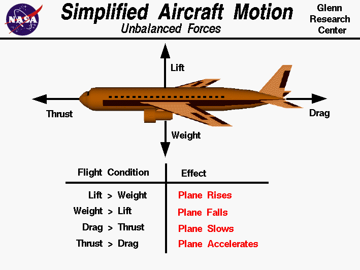

Aircraft weight and performance¶
Note
Read Chapter 5 in the Pilot’s Handbook of Aeronautical Knowledge
There are four forces in flight: Lift, weight, thrust and drag. These forces are the same for fixed wings as with multi-rotors.
The difference is lift: On a fixed wing aircraft, air moving around the wing creates lift – called Bernoulli’s Principle – where a multi-rotor aircraft generates the lift from power.
TO BE CLEAR WITH MULTI-ROTORS: NO POWER = NO LIFT = YOU CRASH. This is why monitoring battery and ensuring you have a reserve is so vitally important. Power is the only thing keeping a multi-rotor in the air.
Of the four forces:
- Lift is achieved by all blades spinning fast enough for the upward force, created by forcing air down, to overcome the weight. When hovering, the upward force and the downward pull of the weight are at equilibrium.
- Thrust is achieved through changing the angle of the lift by changing the speed of some of the propellers. To go forward, the aircraft will tilt the leading edges of the aircraft down, changing the angle of the thrust. DOING SO CHANGES THE LIFT. Pitching the aircraft forward without an increase in thrust will cause the aircraft to descend.
- Weight is the combined weight of the aircraft and the payload, along with gravity acting upon it. Each aircraft is designed to carry a maximum payload, based on the size of the rotors and power to the engines. The more weight you carry, the more thrust you need to stay aloft. The more thrust needed to stay aloft, the more power is consumed. The more power consumed, the less flight time.
- Drag is a combination of the aerodynamics of the aircraft – how air moves over the surfaces of the aircraft – and the amount of air moving across the aircraft. The amount of air moving across the aircraft is a combination of the forward speed of the aircraft and the wind present in the environment. On a calm day, the aircraft will generally have a maximum of 20 minutes of flight time per battery. With a 25 percent reserve, that’s about 16 minutes of effective flight time. Any wind will negatively affect the amount of power used. Aggressive, high speed maneuvers will negatively affect the amount of power used. A strong wind can halve the amount of battery life, and therefore the flight time.
Load Factors¶
Load factor is the ratio of the maximum load an aircraft can sustain to the gross weight of the aircraft. For example, a load factor of 3 means the total load on the aircraft is three times the gross weight of the aircraft. Any change from straight and level flight imposes load on the aircraft. The more severe the maneuver, the more severe the load factor. Steep turns are where load factors occur most, and mostly this is a fixed wing aircraft issue. Between 30 degrees of bank and 60 degrees of bank, the load doubles, from 1 (the force of gravity) to 2. From 30 degrees of bank to 80 degrees of bank, the load factor goes from 2 to 6 – an exponential increase. That load primarily rests on the wings. Exceeding the load factor on your UAS will cause damage.
Basic aircraft equipment: Inside out¶
Frame: The structure of the aircraft. For example, the DJI products have two parts to the frame: The external shell and the internal structure. The Phantom has a more significant external shell than the Inspire 1. The Inspire’s internal structures aren’t internal.
Radio receiver: Receives commands from the controller and sends them to the control board.
Control board: This is the internal computer brain that controls the autopilot, provides automated flight controls and translates the inputs from the controller into movement. The control boards on the two aircraft have gyroscopes, accelerometers and GPS chips providing them information constantly that help control the aircraft while in the air.
Battery: The sole source of power for all components. The battery is also the largest single source of weight on the aircraft.
Power distribution board: A simple circuit board that connects the ESCs to the battery.
Electronic Speed Controller: The ESC converts DC power from the battery to AC power to the motors. The ESC receives instruction from the control board to change the amount of power sent to the motor, which controls the thrust.
Motor: Creates force to spin the propellers.
Propeller: Directly connected to the motor. When spun, it creates thrust that is directly proportional to the speed of the spin. Each propeller spins opposite of the propeller counter to it in order to keep the multi-rotor from itself spinning.
Payload: The generic term for the stuff the aircraft carries. Each aircraft will be different. For example, most UAS will have an external payload of a camera and a gimbal.
Weight and balance¶
Note
Read Chapter 10 in the Pilot’s Handbook of Aeronautical Knowledge
With drones being as small as they are, any change to the load on the aircraft is going to have a negative impact on the performance. Depending on if it’s a fixed wing or a multi rotor, the effects could be:
- Higher takeoff speed/greater power required for liftoff
- Longer takeoff run
- Reduced climbing ability
- Shorter range
- Reduced maneuverability
- Reduced stability
- Reduced control
The main concern – and a likely test question – is the Center of Gravity, or CG. Primarily, CG calculations are mostly concerned with fixed wing aircraft, though it can be applied to multi rotors, and is concerned with the position of the CG fore and aft on the longitudinal axis (the length from the nose to the tail).
- If your CG is too far aft, the nose of the aircraft will lift up, making it difficult to control and creating a substantial stall risk.
- If your CG is too far forward, the nose will point down, making climbing difficult.
Lateral balance is also important – it will cause one side or another.
CG limits – the fore and aft limits of where the center of gravity can reside – are determined by the manufacturer. Rarely do small drone manufacturers provide this, so it is incumbent upon the pilot in command, after any change in load, to test the aircraft and its flight characteristics in a safe location before attempting any mission. Suffice it to say – on a small aircraft such as a small UAS, the CG limits are going to be measured in inches/centimeters, and the weights that could substantially alter the flight characteristics measured in ounces/grams. It will not take much to substantially alter the controls of your drone, so be careful.
The key idea here is that the center of gravity, balance and weight information for your drone will come from your drone manufacturer. Refer to the manuals.
You may be asked to calculate CG. The general formula is this:
Weight X Arm = Moment
Total Moment / Total Weight = CG
Aircraft performance¶
Note
Read Chapter 11 in the Pilot’s Handbook of Aeronautical Knowledge
The remote pilot certificate airman certification standards call for understanding performance charts to predict the effect on the aircraft’s performance. You should read chapter 10 and familiarize yourself with these, but no standard charts exist for UAS. It’s unclear how much you will have to know, other than performance charts exist, and things like density altitude will affect takeoff performance, and cross winds will affect the aircraft’s ability to fly straight.